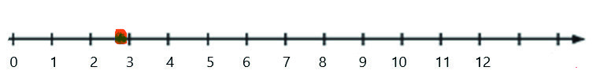
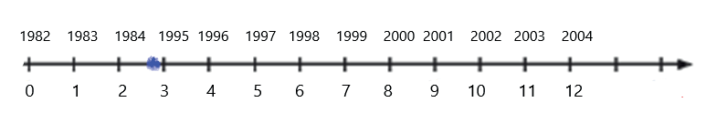

texto autoral tem por objetivo favorecer um ambiente acolhedor, no qual os estudantes se sintam respeitados e capazes de aprender mais com base em suas experiências e na sua trajetória de vida.
PRATICANDO
Respostas
1)
A proposta de identificar o fato mais antigo de que os estudantes se lembram tem como objetivo levá-los a refletir sobre os números, sua importância e seu significado nesse contexto.
2)
Uma sugestão é propor que pensem em como podem representar nessa reta uma idade aproximada de anos, quando, por exemplo, eles relatarem que tinham quase 3 anos quando o fato ocorreu.
Problematize essa ideia de maneira que percebam que a resposta é perto de 3, mas não é 3.
Eles podem decidir grifar um espaço na reta bem perto do 3, veja:

0 1 2 3 4 5 6 7 8 9 10 11 12
Embora não estejamos abordando números racionais, esse tipo de problematização pode auxiliar os estudantes a compreender que entre dois números naturais existem outros números e que os números naturais não são suficientes para representar situações como essa.
Avalie se é pertinente problematizar um pouco mais, pedindo aos estudantes que escrevam o ano em que nasceram acima do ponto zero da reta.
Nessa sugestão, você pode pedir que continuem a sequência colocando os anos correspondentes a 1, 2, 3, ... 12, por exemplo:

1982 1983 1984 1995 1996 1997 1998 1999 2000 2001 2002 2003 2004
0 1 2 3 4 5 6 7 8 9 10 11 12
É possível que o ano correspondente ao nascimento seja algo que alguns estudantes tenham familiaridade, já outros precisarão de sua ajuda para a escrita.
Ao pedir que completem a sequência com base no ano de nascimento, você pode avaliar algumas hipóteses dos estudantes sobre o Sistema de Numeração Decimal.
É importante ouvir e deixá-los bem à vontade para expor o que pensam; muitos podem saber falar os anos correspondentes, mas talvez não saibam escrever esse número.
Você pode interferir de várias maneiras, por exemplo:
pedir que escrevam da maneira que acharem correta, a fim de avaliar essa escrita;
incentivar os que conseguem a explicar como pensaram, a fim de escrever a sequência de anos no quadro, começando pelo ano do nascimento da pessoa que tem mais idade para servir de base para os demais registros.
3)
Espera-se que os estudantes escrevam corretamente o próprio nome completo.
Esta atividade verifica a habilidade de o estudante escrever o próprio nome.
a)
Os estudantes devem contar o número de letras de seu nome.
Esta atividade incentiva a prática de contar e identificar a quantidade de letras em palavras.
b)
Os estudantes devem identificar a letra inicial e também a última letra do